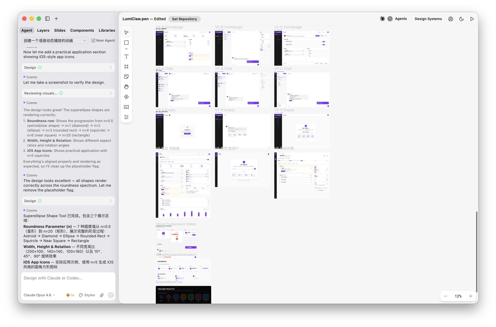
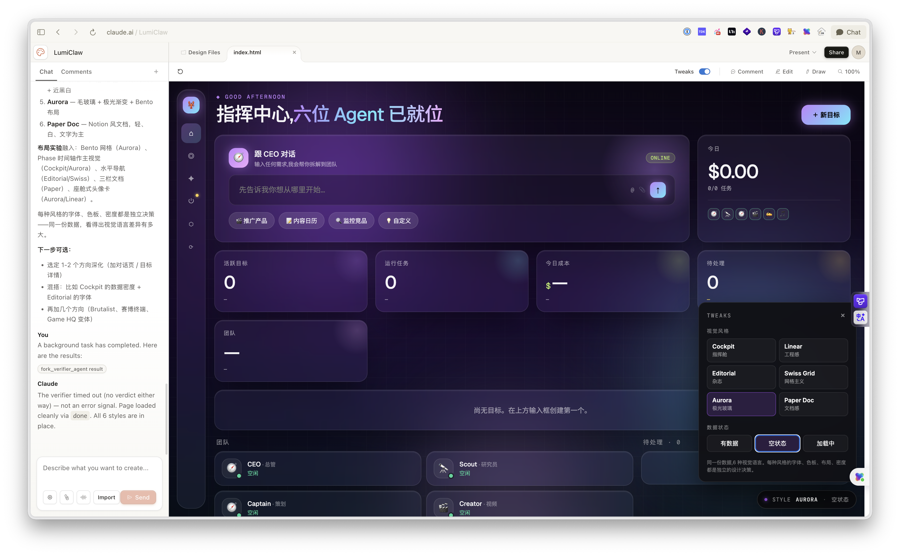

/frontend-design
思想
（为什么）
一个 SKILL.md，约 50 行。讲"别写出 AI 味、要选一个 bold 的美学方向"。理念篇。
github.com/anthropics/skills ↗部署与调试实战
写出来之后怎么继续打磨
从 demo 变成「更像产品的东西」，差的是哪几步。
怎么把它真正部署出去
本地跑通和真正上线，中间是两套问题。
怎么让它后续还能持续维护
不是上线就完了，是从此开始要每周面对它。
不是重复讲，而是告诉你：
哪些已经讲过、今天会在哪一段往前推、哪些直播后回去补课最合算。
从交互设计师的角度，回答一个真实问题：为什么 AI 做的页面，总有一股 demo 味。
从交互设计师的视角，怎么判断一个页面到底哪里不对、可以怎么往前改。
围绕 Landing Page、产品表达、用户触达。简单、实用、可立刻拿去用。
下面这些工具，都可以放回这 6 条原则里检验： 它们到底有没有帮我们把页面说清楚、层级理顺、重点拉出来、用户更愿意继续点下去。
能直接接入 Claude Code 工作流的一段。它是规则、流程、审查系统的化身。
规则 / 流程 / 审查页面方向探索和设计辅助，帮你跳出当前 demo 的惯性表达。
方向 / 探索视觉生成与表达上限，更适合直观对比不同设计方向带来的差异。
生成 / 上限不是装个 skill 就够了。要让它们组合成一条你能复用的工作流。
一个 SKILL.md，约 50 行。讲"别写出 AI 味、要选一个 bold 的美学方向"。理念篇。
1 个扩展 skill + 18 个命令 + 反模式 CLI。从 shape→craft→audit→polish→bolder→quieter→delight 一整条流水线。细节处理最完整，体系最成熟。
9 个风格变体 + 3 个可调 dial（variance / motion / density）。按视觉方向选一个 SKILL.md 挂上去。
20 行小 skill，每次 WebFetch Vercel 的 guidelines 去 audit UI。
"先选一个 bold 的美学方向，再开始写代码。"
这是一份给 AI 的设计自我意识。
"教 AI 先有审美，后写代码。"
主张只有一句：写代码之前，先做出一个明确的美学决定。 展开之后，分三步 + 一条禁令。
这四件事没答清楚，不要动键盘。
11 种方向任选其一，做到极致。
不做"安全的中间态"。
维度不全，就不算"打磨完"。
把 frontend-design 的"思想"，
变成一条可以一步步走的流水线。
npx impeccable detect）。/impeccable 自身是底座，所有其他命令都共享它的设计原则与反模式库。/impeccable teach（项目首次配置）· /impeccable craft（端到端实现）· /impeccable extract（沉淀设计系统）。
"把"做一个好页面"
拆成 18 个可复用的动作。"
刚开始用 AI 写前端，不需要 18 个全记。下面这 4 个打通 80% 的日常场景。
/impeccable teach
项目初始化
/impeccable teach。它会问你几个问题：做给谁、什么品牌调性、偏好方向。.impeccable.md 写在项目根目录。之后所有命令都会自动读它，AI 不会再乱飞。/impeccable craft
主力造页面
/impeccable craft 一个 SaaS 定价页 或 /impeccable craft 首页的 Hero 区。/critique
挑毛病
/critique 当前首页。它会分两路评审：一路按 Nielsen 十大原则，一路跑反模式扫描。/polish
最后一遍
/polish 定价页 或 /polish 整个站点。/impeccable craft 不够用时，
craft 是通用大招，下面这几个是专项命令——只动一件事、改得更可控。
/shape
写代码前
/shape 定价页 要 3 档 面向中小团队 — 它会先给出信息架构和 wireframe 思路，不会直接写代码。/layout
空间节奏
/layout hero 区 — 它会调整间距、对齐、分组，让留白有节奏感。/typeset
字体层级
/typeset 整页 — 建立 display/h1/h2/body 的字号对比与行距，强化阅读路径。/colorize
加策略色
/colorize 整页 以琥珀色为主色 — 它会按 60-30-10 分布稀用，不是全涂一遍。/clarify
UX 文案
/clarify hero 文案 — 用动词开头，把"能得到什么"写清楚。/impeccable extract
沉淀 token
/impeccable extract src/ — 扫代码、沉淀成 CSS 变量并回写 .impeccable.md。这批命令不负责"造"，只负责"调"和"检"。能让同一版设计多走一里路。
/distill
删到骨头
/distill hero 区 — 删装饰元素、合并重复信息，保留最关键那一条。/animate
有目的动效
/animate hero 入场 — 只对关键信息加淡入和位移，不做无意义装饰。/harden
真实数据
/harden 订单列表 — 补空状态 / loading / error / 极端数据的样式。/optimize
性能
/optimize 首页 — 给出 LCP / INP / 包大小的可改项和优先级。/adapt
多端适配
/adapt 移动端 — 不是缩桌面，是为窄屏重新布局并确保触达。/normalize
拉回体系
/normalize 整页 — 把 hard-coded 值替换成 token，让页面回到体系里。三个动词的分工很清楚：
评审 → 体检 → 抛光。先后顺序不能错。
/critique · 是不是有 AI 味：跑两路并行评审 — LLM 走 Nielsen 10 启发式，detector 跑 25 条反模式扫描。出"哪里像 AI slop"。/audit · 技术上撑不撑得住：5 个维度（A11Y / 性能 / 主题 / 响应式 / 反模式）打 0-4 分，每条结论给 P0-P3 严重度。出一份可塞进 Linear 的清单。/polish · 最后一遍抛光：6 个维度（对齐 / 字体 / 颜色 / 状态 / 动效 / 文案）。前提是功能已经完整 — 不然抛光就是浪费工时。
"critique 看像不像，
audit 看撑不撑，
polish 收最后一寸。"
Simple, fast, predictable. No surprises on launch day.
From localhost to production in 30 seconds. We refuse to be boring.
/distill：删。竞品按钮太多、信息太满、字体三种用不下去——它问一个问题：这个页面到底要做的"那一件事"是什么？剩下不为这件事服务的，全部砍。/delight：在功能完整之后，加那一点"人味"。空状态的一句话、loading 的微文案、成功反馈那一下子。规则是：把这点 delight 删掉，功能仍然 100% 可用。/animate：只动 transform 和 opacity，缓动只用 ease-out exponential。如果你在 animate width/top/left，它就在做错事。/clarify：改 UX 文案。"了解更多" → "查看完整定价"。错误信息不甩锅给用户，按钮描述结果不描述动作。"这个页面，
那一件事是什么？"
剩下的全部要为它让路。
"删掉 delight，
功能仍然 100% 可用。"
没有任何东西"依赖"那一笑。
"按钮描述结果，
不描述动作。"
「保存修改」> 「OK」。
按使用阶段分组。不需要全记——把它当工具箱，遇到问题再来翻。
一个 "风格开关"——
AI 想做哪种调性、哪种动感、哪种密度，
都能用 3 个数字直接说清楚。
挂一个 子 skill，
给三个 数字，
剩下让 AI 干。
装完 /taste-skill，默认 dial 是 8 / 6 / 4，对大多数项目够用，什么都不用改。
做具体项目时选一个风格方向挂上去 —— 只挂一个，不要叠加。挂多了就是乱炖。
在聊天里直接说"把多变度调到 5" / "动效拉到 8" 就行，不用改文件。
minimalist-skill
文档 / 后台工具 / Notion 风 / 强调可读性
soft-skill
SaaS 官网 / 产品首页 / 想要"高级感"
brutalist-skill
作品集 / 数据仪表盘 / 有个性、编辑风
stitch-skill
配合 Google Stitch 批量生成界面
每个旋钮从 1 到 10。默认 8 / 6 / 4 意思是：多变度偏高、动效中等、密度略松。
居中 Hero、三列等距卡片、左右对称
非对称 split、Bento 不等宽、打破一次栅格
手写编辑感、重叠贴纸、旋转元素
几乎没有动画；只有 hover 色变
滚动触发淡入 + 错位入场 + 平滑过渡
视差滚动、stagger 序列、可能让人晕
一屏 1-2 件事；留白大、呼吸感强
常规间距；一屏 3-4 个信息块
高信息密度；适合后台、数据仪表盘
整个过程不用改任何文件——在聊天里说人话，AI 读配置写代码。
soft-skill；像 Notion 就 minimalist-skill。挂一个就够。
记住一句话：
"挂一个 子 skill，
给三个 数字，
剩下让 AI 来"。
不只是"设计审美"——
更是一份代码 × 体验的规范清单。
"做完之后，
让 Vercel 帮你看一眼。"
下面是最常踩的几类。真正被扫描的共 18 类、几百条规则。
给所有人能用
aria-label<label> 或 aria-labelalt 和尺寸aria-live="polite"不卡、不爆首屏
getBoundingClientRect 等布局读<link rel="preconnect">width/height 防 CLS不晕、不过载
prefers-reduced-motiontransform 和 opacitytransition: all填得顺
autocomplete 和语义 nametype / inputmode服务端渲染不闪
window / document基本覆盖全部 Web 规范
只挑一个先学？从 /impeccable 开始——它的覆盖最全、细节处理最成熟，单用就能把页面推到能上线。
先有审美方向，先想清楚做什么、给谁、要什么感觉。
没有这一步，后面全是装修。
端到端实现 + 视觉迭代。在浏览器里看到，不满意继续改，到差不多为止。
挂一个具体风格变体（brutalist / minimalist / soft）；用 dial 调强弱，让风味稳定。
三件套 + Vercel 体检。出问题回到 03 调风味、回到 02 改实现。直到能上线。
从 用很多 skill，到
做一个自己的 skill 集合，
是一次很关键的进阶。
不只是装别人的 skill —— 而是开始建立自己的设计调试流程，让自己知道什么阶段该做什么事。
配套的 DeploySea Landing 是一个小实验：需求不变、提示词近似、只换 skill，看产出差异。 每个页面右下角按 i 能看到当版的指令、判断和 skill 规则。
不启用任何 skill、不挑方向——让 AI 默认写一个。出来的就是蓝色 #2563eb、居中 Hero、等距卡片、emoji、"500+ 团队信赖"。v2/v3/v4 的对照起点。
打开 v1 实例 ../landing/#v1 ↗/frontend-design
通用审美型 skill
挂 Anthropic 官方 /frontend-design。它强制你挑一个极端方向（选了 Editorial）、拒绝 AI slop、distinctive 字体配对。但不读项目上下文——于是 v3 会切换路径。
打开 v2 实例 ../landing/#v2 ↗/impeccable
项目约束型 skill
先跑 /impeccable teach 把项目主张写进 .impeccable.md，之后所有设计命令都读这份上下文。出来的 Bento 网格是在「你的项目要做什么」约束下生成的。
taste-skill
社区全能型 skill
换 taste-skill（社区方案）。不用 teach、不读项目上下文，用自带 3 档 dial（8/6/4）+ 长反面清单约束产出。v3 vs v4 = "项目约束" vs "全能自带"。
打开 v4 实例 ../landing/#v4 ↗如果说 skills 是规则、流程、审查系统 —— 这两个是探索和表达层的补充。


不会讲成一堂教程课。重点是让你直观看到：一个项目是怎么真的上线、怎么真的被维护的。
Vercel 是托管式平台，零运维就能把项目挂到公网。是起步最快的选项。
会演示：项目列表 → 单次部署详情 → build log → deployment URL。
"git push 就上线。
这是 Vercel 给到的
最大价值。"
代价是：你被平台规则绑住，且数据库 / 长任务 / 多服务这些事，它不太擅长。
Dokploy 是自己服务器上的部署面板，把项目、服务、数据库、反向代理统一放到一个后台管。
会演示：项目总览 → 单项目的服务 + 数据库 → 一次真实部署日志。
"当你不只是做一个 demo —
开始有数据库 / 多个服务 / 长期维护时，
自部署的控制力会更高。"
选哪个，不取决于哪个更"高级"。取决于你这个项目当前在哪个阶段。
| Vercel | Dokploy | |
|---|---|---|
| 定位 | 托管平台 · git push 即上线 | 自部署 · 自己服务器管全栈 |
| 上手成本 | 极低 | 中（需要一台服务器） |
| 控制力 | 有限（按平台规则走） | 高（数据库 / 服务 / 任务都自己管） |
| 成本曲线 | 开头免费 · 流量大后涨价快 | 固定服务器费用 · 多项目摊薄 |
| 适合阶段 | demo / 个人项目 / 快速试错 | 真实产品 / 多服务 / 长期维护 |
| 我的用法 | 新项目 / 试错 / 静态页 | 主力 · 项目 + 数据库都放这里 |
如果今天只能记住三句话，希望是这三句。
真正拉开差距的，是你能不能继续把它打磨得更像产品。生成只是 0 → 1，剩下的路要自己走。
而是要进入你的真实工作流。从用很多 skill，到形成自己的 skill 集合 —— 是一个很关键的进阶。
它是你第一次真正面对真实世界。本地跑通和真正上线，中间是两套问题。从这一刻开始，你才真的"有了一个产品"。
没问出来的、想继续聊的 —— 评论区、社群、下一期直播，继续。
下一次见面，希望你的 demo
已经在线上跑了。